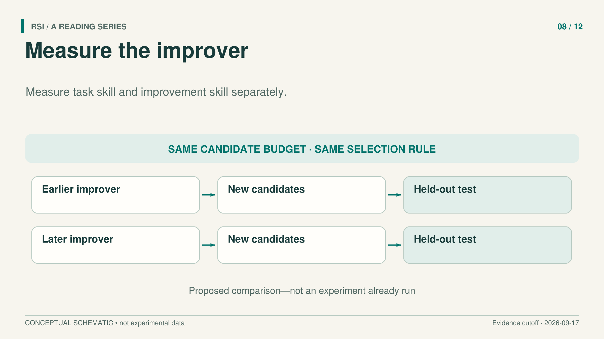
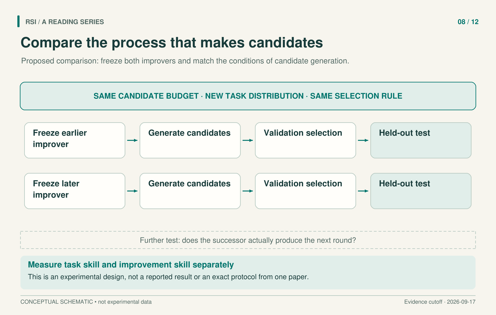

Suppose two systems solve a task equally well. One may still be better at diagnosing failures, selecting experiments, or producing a stronger successor. Their current task scores would miss that difference.
This is an illustrative distinction, not a reported experiment. It identifies the object a self-improvement claim needs to measure: the procedure that generates improvements. Giving that procedure permission to edit itself establishes what can change. Testing the quality of its descendants establishes something about what the change achieved.
Hyperagents, Dream-RSI, research harness optimization, and HELIX approach different parts of this measurement problem. Reading them together helps separate a better current solution, a more effective search procedure, and a successor that actually takes over the next round.

Freeze the improver long enough to test it
Hyperagents places a task agent and a meta agent in the same editable program. The task agent solves problems; the meta agent proposes and implements modifications. DGM-H can modify both, while retaining fixed base models, parent selection, and evaluation protocols in the main experiments.
The key measurement is called imp@50. The authors select hyperagents from paper-review or robotics runs and transfer them to a new domain: grading mathematical proofs for IMO problems. In that domain, they freeze the transferred meta agent and let it generate 50 task agents. Validation performance selects the best candidate; held-out testing measures its improvement over the starting point.
Freezing the meta agent serves a purpose. It holds one acquired improver still while measuring the descendants it can produce. Otherwise, changes to the improver during the measurement could make it unclear which version deserves credit. The protocol moves beyond asking how well the first transferred task agent performs.
Attribution remains limited. Both task and meta components transfer together. Near-zero starting scores also include failures to produce the required output format. Fixing formatting is a useful adaptation, but its contribution cannot automatically be interpreted as an equal increase in mathematical judgment. The result is evidence about the transferred system under the specified generation, selection, and testing protocol.
Improvement can concern where to search
A system also needs to choose which branch to expand, how many attempts to run together, and when to stop. Dream-RSI makes this exploration policy the editable object.
It converts previously executed discovery trees into a replay environment. Candidate policies can revisit choices about branch order, parallel batches, and stopping using outcomes already present in the recorded tree. Replay gives policy development a cheaper source of feedback, but it cannot reveal the outcome of an unvisited branch. New observations require subsequent online execution.
The discovery agent, policy-development agent, models, evaluator, and execution interfaces remain fixed. Improving the exploration policy therefore does not establish that the policy developer itself has improved. It identifies a particular component whose behavior can change and persist.
The Lasso experiment compares five rounds of Dream-RSI with Fixed Exploration using the same Gemini-3.1 Pro model and matched maximum per-round budgets. On six held-out datasets, the discovered algorithms’ average solving time falls from 3587.1 to 2931.0 milliseconds. Cumulative discovery-agent calls fall from 550 to 317.
Those quantities have different meanings. Solving time measures the resulting algorithm. Calls measure one part of the search expense. The latter excludes a complete accounting of replay, policy development, tools, tokens, and elapsed time. A lower call count cannot simply be relabeled the same proportional reduction in total research cost. A policy that wins on recorded history also has no guarantee of winning on every future search tree.
A better harness has a specific scope
A harness is the surrounding program that organizes roles, prompts, tool use, intermediate results, and checks. Recursive Harness Self-Improvement, or RHI, revises that organization while keeping the coding model fixed.
An external optimizer reads the relative preferences between neighboring versions’ outputs, together with revision history. It proposes a new harness specification. Although the evaluator’s prompt is not directly given to the optimizer, the resulting preference history still conveys information about what the evaluator rewards.
The reported study uses 30 synthetic machine-learning research tasks and model-based pairwise judgments. Improved output preferences and lower normalized single-execution costs concern that setting. They do not by themselves establish that a general research agent acquired a transferable skill. Nor do the single-execution costs include all earlier versions, optimization calls, and judgments needed to obtain the selected harness.
The useful question is therefore which component benefited, on which tasks, and at which cost boundary. Task-specific revision, persistent changes to a general improver, and model training are separate interventions even when all use a history of earlier attempts.
A proposed handoff needs an executed successor
HELIX proposes a model–harness pair as the state passed between rounds. Its intended cycle is build, update, rebuild: evaluate harnesses, prepare verified experience for a model update, and rebuild the harness around the updated model.
The examined paper prepared the model-update data but did not train an updated model. It consequently did not execute a measured multi-round model–harness cycle. The distinction is operational: an “updated model” box in a diagram is a proposed step until an actual successor runs.
Its candidate matrix also shows why selection matters. The 65 candidates each ran once on the first 100 eligible AtCoder-derived repair fixtures, using the same MiniMax-M2.7-highspeed model label and public tests only. These are not hidden-test or official LiveCodeBench scores. The Pi baseline solves 50 tasks and the best fixed harness solves 52. A portfolio union reaches 79: after inspecting all outcomes, count a task as covered if any candidate solved it. This demonstrates complementary coverage, but it does not supply a deployable selector that knows beforehand which candidate will succeed. Calling the union a single agent’s 79% score would change the measured object.

This is a proposed controlled design synthesized from the literature. It is not an exact reproduction of the Hyperagents protocol or an experiment already performed for this series.
Give the claim a direct comparison
A useful next experiment would freeze the earlier and later improvers, give them the same candidate budget, and compare what they produce on tasks that did not participate in their prior selection. Candidate selection should use a defined validation rule; final testing should remain separate. Record which task code, memory, and other state move with each improver.
Separating selection from final testing prevents information already used to choose a candidate from being presented as fresh evidence. Searching many candidates and retaining the best measures what the search can find within its budget. Evaluation outside that selection process additionally tests whether the gain persists. Both results can be reported, with their task sets and statistical objects made explicit.
If the claim also concerns a continuing recursive process, allow the successor to perform the next actual round and repeat the measurement. Record evaluation identity and the full cost of candidates, failures, development, and testing. This additional handoff asks a question that a frozen-improver test alone cannot answer.
The resulting evidence can be informative even when the gain disappears. It may show that improvement came from format repair, task-specific history, extra attempts, or a search allocation policy. Identifying that contribution makes the next experiment more precise than treating every rising task score as growth in the ability to improve.
Selected primary sources
Hyperagents · Dream-RSI · RHI · HELIX.
Adapted from a book whose literature inclusion cutoff is September 17, 2026. Results refer to the versions examined there, not a new literature search.